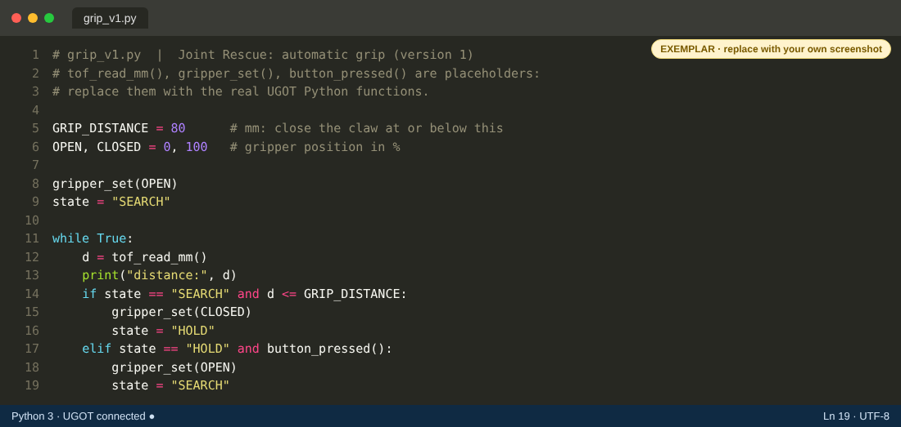
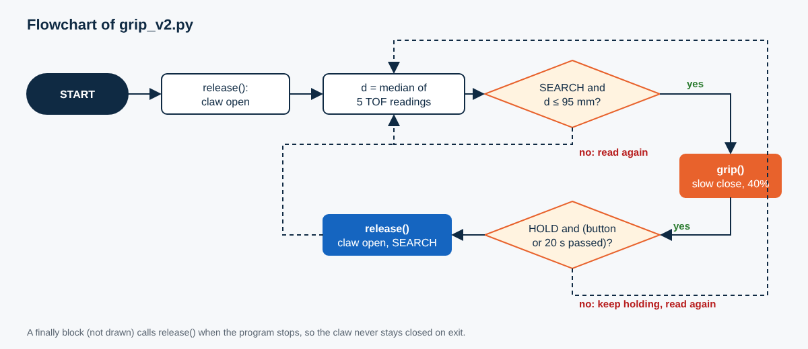
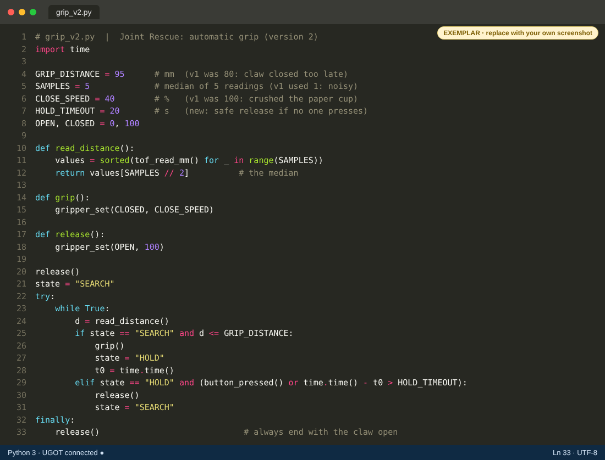
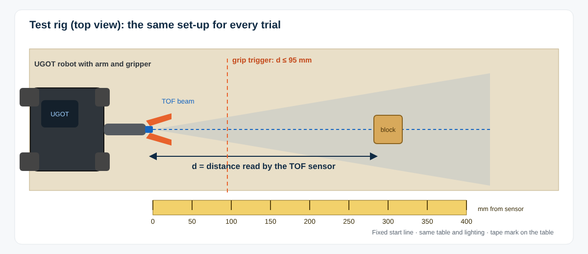
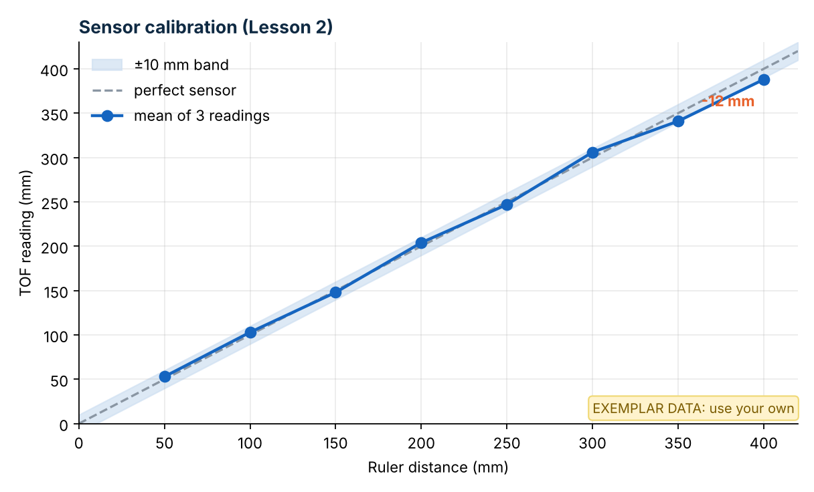
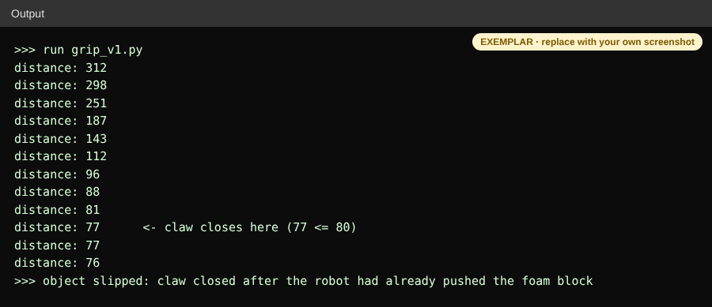
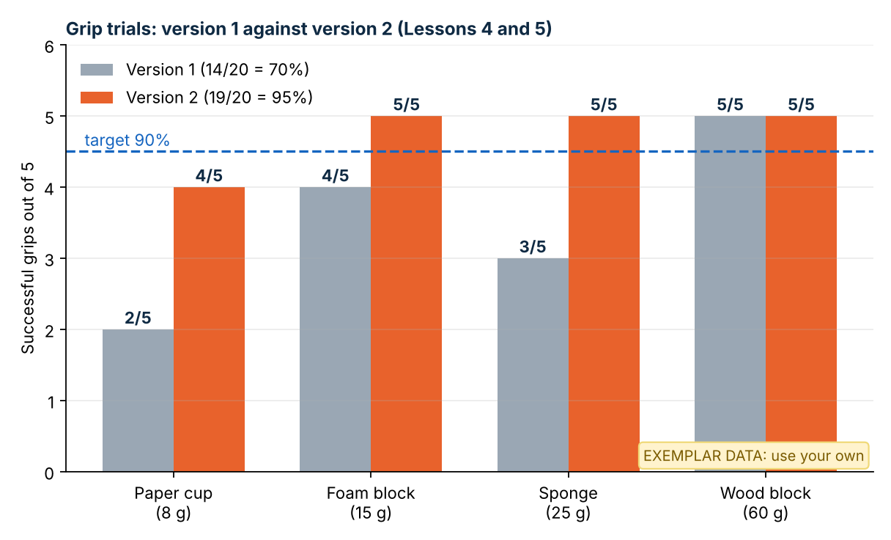
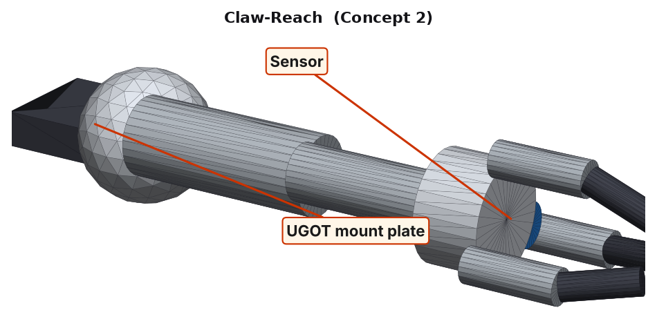

How Criterion C connects to A and B
B gave you a digital design. C proves you can make a working robot that does the same job, then explains what changed.
From Criterion A
The client's need and your research. In C4 you check the finished robot still serves this client. See Criterion A.
From B1 Specification
The criteria a robot can show: TOF sensor reads 4–200 cm (7.2), sensor view unblocked (7.3), safe gripper with no pinch trap (6.1), and the gripper holding light objects (7.1). They become your tests.
From B3 and B4
B3 is the chosen sketch you compare with in C4: a three-finger claw, with the TOF sensor looking where it grips. B4 gives the plans you code from: the system diagram, flowchart, state diagram, wireframes and pseudocode. Its CAD size and mass (306 × 61 × 64 mm, about 134 g) stay as the digital design figures, because nothing is fabricated here.
C1 · Logical plan
Six 70-minute lessons. Each task has a time, resources, a check and what to do if it fails, so a classmate could follow it without asking you.
1. Timeline (Gantt chart)
| Task | Lesson 1 | Lesson 2 | Lesson 3 | Lesson 4 | Lesson 5 | Lesson 6 |
|---|---|---|---|---|---|---|
| 1.1 Plan the tests and check the kit | 15 | |||||
| 1.2 Assemble and connect the robot | 25 | |||||
| 1.3 First Python program: move the gripper | 20 | |||||
| 2.1 Python: read the TOF sensor | 25 | |||||
| 2.2 Calibrate the sensor with a ruler | 35 | |||||
| 3.1 Python: gripper functions and safe limits | 30 | |||||
| 3.2 Python: drive and arm control | 30 | |||||
| 4.1 Python: automatic grip, version 1 | 30 | |||||
| 4.2 Test version 1 on four objects | 30 | |||||
| 5.1 Improve the code: version 2 | 35 | |||||
| 5.2 Retest version 2 (same protocol) | 25 | |||||
| 6.1 Final trial: 20 grips | 30 | |||||
| 6.2 Record video and compare with B3 | 30 | |||||
| Log entry with images (every lesson) | 10 | 10 | 10 | 10 | 10 | 10 |
Numbers are minutes. building and testing Python coding · Total 420 min (6 × 70).
2. Task and sub-task plan
| # | Task and sub-tasks (in order) | Time | Resources | Check | If it goes wrong |
|---|---|---|---|---|---|
| 1.1 | Plan the tests and check the kit. (a) Read the B1 criteria and your B4 flowchart. (b) Fill in the test plan below. (c) Tick the kit parts you need. | 15 min | B1 and B3 pages, parts list, test plan | Every test has a number of trials and a pass mark. | Missing part: tell the teacher now, and plan around it. |
| 1.2 | Assemble and connect. (a) Build the robot with gripper arm and TOF sensor. (b) Power on. (c) Connect the laptop to the UGOT. (d) Photograph the finished robot. | 25 min | UGOT kit, gripper arm, TOF sensor, laptop | Robot connects. Cables clear of wheels and the gripper. | Will not connect: restart both, check the network, ask. |
| 1.3 | First program. (a) Open the Python editor. (b) Move the gripper open, then closed. (c) Save as hello_gripper.py. | 20 min | Python editor, UGOT | Gripper moves smoothly with no grinding. | Nothing moves: check the servo cable and the port number. |
| 2.1 | Read the sensor. (a) Print the TOF distance every 0.2 s. (b) Wave a block in front of it. (c) Screenshot the output. | 25 min | Python editor, test block | Numbers change smoothly as the block moves. | Readings stuck or zero: check the sensor port and its view. |
| 2.2 | Calibrate. (a) Tape marks every 50 mm to 400 mm. (b) Place the block at each mark. (c) Record 3 readings. (d) Plot reading against ruler. | 35 min | Ruler, tape, block, spreadsheet | Error within ±10 mm. Note any distance where it is not. | Large error: check the sensor is square to the block. |
| 3.1 | Gripper functions. (a) Write grip() and release(). (b) Step the gripper from 0% to 100%. (c) Find the safe limit. | 30 min | Python editor, UGOT | Gripper stops at its limit and never stalls. | Motor strains: lower the maximum position in the code. |
| 3.2 | Drive and arm control. (a) Add Bluetooth or key controls. (b) Move the robot to the block under control. (c) Keep hands clear. | 30 min | Controller or keyboard, test area | Robot stops when the key is released. | Drifts: add a stop command in the code. |
| 4.1 | Automatic grip, v1. (a) Start from the B4 flowchart and pseudocode. (b) Write the loop. (c) Close at a trigger distance. (d) Release on a button. | 30 min | Flowchart, Python editor | Program runs with no errors. | Error message: read the line number, fix, rerun. |
| 4.2 | Test v1. (a) Four objects × five trials. (b) Record success or failure and why. (c) Screenshot the output of one failure. | 30 min | Cup, foam, sponge, wood block, scale | Record every result, including failures. | Robot knocks objects: slow the approach and say so. |
| 5.1 | Improve to v2. (a) Pick the causes from your 4.2 data. (b) Change the code one thing at a time. (c) Note each change. | 35 min | v1 code, results table | Each change addresses a recorded failure. | Worse than v1: undo the last change. |
| 5.2 | Retest v2. Same objects, same table, same start line, same number of trials. | 25 min | As 4.2 | A fair comparison: only the code changed. | Still failing: record the cause for C4. |
| 6.1 | Final trial. 20 grips (5 per object), counted live. | 30 min | As 4.2, camera | Success rate against the pass mark. | Below target: explain why, do not hide it. |
| 6.2 | Video and comparison. (a) Record 90 seconds. (b) Place a photo of the final robot next to the B3 sketch. | 30 min | Phone, tripod, B3 sketch | Video shows the code, the test and the result. | Short on time: prioritise the test clip. |
3. Test plan (written in Lesson 1, linked to B1)
| Test | What you measure | Method | Trials | Pass mark | B1 |
|---|---|---|---|---|---|
| T1 Sensor accuracy | TOF reading against ruler, 50–400 mm | Block at each tape mark | 3 per mark | Within ±10 mm | 7.2 |
| T2 Sensor view | Readings with gripper open and closed | Block at 150 mm | 3 each | Same ±5 mm | 7.3 |
| T3 Grip success | Gripped without dropping or crushing | Four objects, same start line | 5 per object | At least 90% overall | 7.1 |
| T4 Safe release | Release by button and by timeout | Hands clear, timed with a phone | 3 | Opens within 1 s | 6.1 |
Choose test objects inside your gripper's rated load: check the kit guide. This exemplar uses a paper cup (8 g), a foam block (15 g), a sponge (25 g) a wooden block (60 g) and, for the rescue run, a 60 g model casualty figure.
C2 · Technical skills and explaining the code
Show with screenshots and video how the program works and how it helps the client, who needs a small robot to find and grip light rubble.
Python skills you must show
Variables and constantsFunctions (def, return)if / elif / elsewhile loopsLists and sorting (median)Time and delaystry / finally for safe stopprint() for testingCommentsRecording results in a table
Show each skill in your own code, and explain it in your own words. Mild: variables, if and while. Spicy: add your own functions. Hot: add the median filter, a timeout and a safe stop.
Version 1 of the code and what it does

| Line | What it does and why |
|---|---|
GRIP_DISTANCE = 80 | A named number, so you can change it in one place after testing. |
OPEN, CLOSED = 0, 100 | Names for the two gripper positions (%), so the code reads clearly. |
state = "SEARCH" | Remembers what the robot is doing, so it does not close again and again. |
while True | Keeps checking the sensor for as long as the program runs. |
d = tof_read_mm() | Reads how far away the object is (the kit TOF sensor reads 4–200 cm, which is 40–2000 mm). |
if … d <= GRIP_DISTANCE | The decision: close only when searching and the object is close. |
elif … button_pressed() | Lets the operator release the object safely. |
Helping the client: the robot grips by itself when it reaches the rubble, so the operator steers and does not have to time the grip.
tof_read_mm(), gripper_set() and button_pressed() stand for the real UGOT Python functions. Look up the real names in your UGOT Python documentation and use them in your own code.The final algorithm (version 2)


Make a 90-second video that explains it
| Shot | What the camera shows | What you say |
|---|---|---|
| 0:00–0:10 | The robot with its arm and gripper on the test table | “This is my UGOT robot for Joint Rescue. It grips light rubble by itself.” |
| 0:10–0:30 | Screen recording of the code, scrolling slowly | “The loop reads the TOF sensor. When the object is 95 mm or closer, grip() closes the gripper.” |
| 0:30–0:50 | Close-up of the sensor and the tape mark | “I calibrated the sensor against a ruler. It is accurate to about 10 mm up to 350 mm.” |
| 0:50–1:10 | One full trial: approach, grip, lift, release | “Here it grips a foam block. The button releases it, and a timeout releases it after 20 seconds.” |
| 1:10–1:30 | Results chart on screen | “Version 2 gripped 19 of 20 times against 14 of 20 for version 1. This meets my target and helps the client because…” |
Test in the Virtual UGOT
Before or after you test on the real robot, run the same Python on a virtual UGOT. It has the gripper arm, the TOF sensor (40 to 2000 mm, mounted 35 mm behind the fingertips), the four test objects from your test plan and a model casualty to rescue. The code is the same grip_v1.py and grip_v2.py as above, so you can see the three problems from Lesson 4 happen and then see version 2 fix them: the cup crushed at 100% closing speed, the noisy sponge readings, and the claw closing too late.
Use Copy test evidence to paste the results into your C3 log. Say clearly that this evidence is from the simulator, and add your own photos and results from the physical robot.
C3 · Following the plan: lesson-by-lesson log
One entry per lesson, with images of the current development, what was done, actual time against the plan, the problem and the next step. Write it at the end of every lesson.
Lesson 1 · Test plan, assembly and first program
- Whole robot from the front, gripper open
- TOF sensor clearly visible
- Your name card or table number in shot
- The code and the editor's connected status
What I did: wrote the test plan, built and connected the robot, and moved the gripper from Python.
Problem: the laptop did not find the robot at first.
Decision: restarted the robot and rejoined the same network. This cost 8 minutes, so I finished task 1.3 at home.
Next: read the sensor.
Lesson 2 · Reading and calibrating the TOF sensor


What I did: printed the sensor readings, then placed the block at tape marks every 50 mm and recorded three readings each. I plotted reading against ruler distance.
Evidence: the rig set-up (replace with a photo of your own) and the calibration chart EXEMPLAR.
Finding: readings are within ±10 mm up to 350 mm, but 12 mm low at 400 mm. I will only trust the sensor up to 350 mm.
Problem: I ran 2 minutes over because I re-measured 400 mm.
Next: gripper functions.
Lesson 3 · Gripper functions and control
- Gripper fully open
- Gripper at your safe closed limit
- Ruler in shot to show the opening size
# finding the safe limit
for pos in (0, 25, 50, 75, 100):
gripper_set(pos)
print("position", pos)
time.sleep(1)What I did: wrote grip() and release() as functions, stepped the gripper from 0 to 100% to find where it strains, then added drive controls that stop when the key is released.
Finding: the gripper moves smoothly over the whole range, and 100% closes it fully with nothing inside, so the code uses OPEN = 0 and CLOSED = 100. Check the safe limit on your own gripper. EXEMPLAR
Problem: the robot kept drifting after releasing the key.
Decision: added a stop command to the drive function.
Next: automatic grip, version 1.
Lesson 4 · Automatic grip, version 1, and first trials

What I did: followed my B4 flowchart and pseudocode to write the loop in grip_v1.py and tested four objects five times each: 14 of 20 gripped (70%), below my 90% target.
Evidence: the code and the console of a failed trial. The claw closed at 77 mm, after the robot had already pushed the foam block EXEMPLAR.
Problems found: (1) the claw closed too late; (2) the sponge gave jumpy readings; (3) the paper cup was crushed at full closing speed.
Next: fix these in version 2 (see C4).
Lesson 5 · Improving the code: version 2
What I did: changed one thing at a time and recorded the effect of each: trigger distance 80 → 95 mm, median of five readings, slower closing speed, a 20-second timeout and a finally block.
Evidence: the version 2 code with the changed lines commented EXEMPLAR.
Retest: same objects, table and start line: 19 of 20 gripped (95%).
Next: the final trial and the video.
Lesson 6 · Final trial, video and comparison

- Video of one full trial, with the code on screen
- Photo of the final robot gripping an object
What I did: ran the final 20-grip trial counting live, recorded the 90-second video and placed the final photo next to the B3 sketch (see C4).
Result: version 2 is above my 90% target and above version 1 for every object EXEMPLAR DATA.
Remaining weakness: the paper cup still failed once, because it is the lightest and easiest object to crush or knock. A gentler closing profile is the next improvement.
C4 · Justifying changes
Compare the final robot with the B3 chosen sketch and with the plan. For each change: what changed, evidence, and a full reason linked to the specification.

- Same angle as the B3 sketch (three-quarter view)
- Gripper and TOF sensor both visible
- Add arrows or labels in your presentation to point out what is different
Changes to the design (B3 against the final robot)
| # | Original (B3 and B4) | Final robot | Reason for change (full justification) |
|---|---|---|---|
| 1 | Three-finger printed claw. | The kit's gripper. | This is a Digital Design unit, with no fabrication, and the kit robot is provided. The kit gripper does the same job as the B3 claw: it closes around light rubble. The B3 CAD model remains the digital design, and the robot proves that the function works. |
| 2 | TOF sensor centred in the palm, at the claw. | TOF sensor 35 mm behind the fingertips (kit mount position). | The kit mount cannot place the sensor in the palm. The sensor still sees the object (T2 passed), but it reports the distance to the object from behind the fingers, so the trigger distance had to be raised from 80 to 95 mm. This keeps B1 7.3 (sensor view unblocked) met. |
| 3 | Telescoping forearm for 300 mm reach. | Fixed arm pose, with the robot driving to the object. | Reach is done by driving the robot, not by extending a tube. The calibration (T1) also showed the sensor is only reliable up to 350 mm, so B1 7.2 (sensor range) is met only up to 350 mm in this set-up. The grip logic works at under 100 mm, so this does not affect the function. |
| 4 | B4 wireframes: custom operator screens with a distance gauge, state label and RELEASE button. | The kit's own controller or app for drive and arm. Distance and state are printed in the Python output. | Building a custom app is outside this unit. The kit controller already covers drive and arm (wireframe items 2 and 3), and printing d and state gives the same information as items 6 and 7. The RELEASE function (item 8) became a button in the code. Describe the screens your kit really offers. |
Changes to the code (version 1 → version 2)
Compare the final flowchart in C2 with your B4 flowchart (the plan). The differences are listed here: the B4 flowchart used one reading, and a fixed distance of 80 mm, and had no timeout.
| # | Change | Evidence (what went wrong) | Reason, and the effect on the result |
|---|---|---|---|
| 1 | GRIP_DISTANCE 80 → 95 | Console from Lesson 4: the claw closed at 77 mm after the block was pushed. | The sensor is 35 mm behind the fingertips and the claw takes time to close while the robot is still moving. Triggering earlier lets the fingers close before contact. The foam block improved from 4/5 to 5/5. |
| 2 | One reading → median of 5 | The sponge gave readings jumping between 60 and 140 mm, so the grip triggered late or never. | A sponge absorbs the sensor's beam, so single readings are noisy. The median of five ignores stray values. The sponge improved from 3/5 to 5/5. |
| 3 | Closing speed 100% → 40% | The paper cup was crushed in 3 of 5 trials. | A slower close gives the gripper time to stop on the object. The cup improved from 2/5 to 4/5. This also makes the gripper safer to work near (B1 6.1). |
| 4 | Added a 20 s timeout and a finally block | In test T4, the claw stayed closed on an object when the program was stopped. | The program always releases at the end, so an object is never left held and nobody has to pull it out of a closed gripper. B1 6.1 (safe handling) needed this. |
Why only one change at a time: it is the only way to know which change helped. Record the effect of each.
Changes to the plan
| Original plan | What happened | Justification |
|---|---|---|
| 1.2 Connect, 25 min. | Took 33 min (+8). | The laptop did not find the robot. The extra time came from the 1.3 sub-task, which I finished at home the same day, so the plan did not move. |
| 2.2 Calibrate, 35 min. | Took 37 min (+2). | I re-measured 400 mm because the reading was 12 mm low. This led to the 350 mm reliability limit in C4 change 3. |
| 5.1 Improve to v2, 35 min (4 changes planned). | Changes made one at a time (with retests inside 5.2). | Testing after each change showed which change fixed which object. It cost no extra time because Lesson 4 had already found the causes. |
Final check against B1
Closes the loop with Criterion B. Numbers are illustrative: use your own results.
| B1 criterion | Test | Result | Met? |
|---|---|---|---|
| 7.2 TOF sensor range (kit: 4–200 cm) | T1 | Within ±10 mm up to 350 mm; −12 mm at 400 mm | Partly (to 350 mm) |
| 7.3 Sensor view unblocked | T2 | Open and closed readings within 3 mm | Yes |
| 7.1 Grips light objects | T3 | 19 of 20 (95%), target 90% | Yes |
| 6.1 Safe handling | T4 | Opens within 1 s by button; timeout release works; claw opens on exit | Yes |
| Mass, cost and size (2.1, 4.2, 5.1) | B4 digital design | ≈ 134 g, ≈ AED 34, 306.3 × 61.0 × 64.0 mm in CAD. Not re-measured, as nothing was fabricated | As in B4 |
ILLUSTRATIVE DATA A partly met criterion is honest and scores better than a hidden failure.
Next steps
1. Answer the summative booklet. Download the Criterion C summative booklet, make your own copy (rename it with your name and class), and type your answers into it.
⬇ Download the summative booklet (Word)2. Test your technical skills. Take the quiz for this topic and the Python skills quiz. Your score is saved to the class Google Sheet.
🧠 Take the Topic 04 quiz🐍 Python skills quiz🧩 Your turn
Plan it
All: write 6 tasks for your robot with a time for each. Most: add resources, a check and a pass mark. Some: give your plan to a classmate and record what they could not follow.
Show it
All: take one photo or screenshot every lesson and write two sentences. Most: add the actual time, one problem and your decision. Some: record a 90-second video explaining your code and tests.
Justify it
All: find one thing that differs from your B3 sketch and show it with a photo. Most: back one code change with test data (before and after). Some: check every B1 criterion and say honestly which are not fully met.